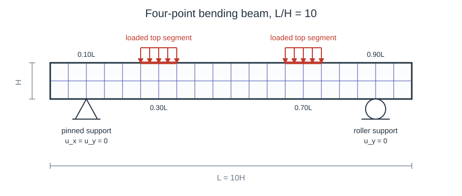

MPI four-point bending
A 2D plane strain four-point-bending beam using VEVP_Zhao2021_AD, solved with FerriteSolidMechanics' threaded and MPI assembly paths. The runnable script is examples/mpi_four_point_bending.jl; the SLURM submission script is examples/submit_four_point_bending.sh.
Run the one-rank script from the repository root with:
julia --project=. examples/mpi_four_point_bending.jlRun the same script through MPI with:
mpiexec -n 4 julia --project=. --threads=1 examples/mpi_four_point_bending.jlThe script's main() initializes MPI before calling the example function. Without mpiexec, this is a single-rank MPI run. The direct run writes PVD/VTU output and therefore requires WriteVTK.jl in the active environment. For a no-output run that avoids WriteVTK.jl, include the script and call main(; vtk=nothing):
julia --project=. --threads=1 -e "include(ARGS[1]); main(; vtk=nothing)" examples/mpi_four_point_bending.jlProblem setup
In its default configuration, the beam is under plane strain with aspect ratio L/H = 10. Its structured quadrilateral mesh spans L x H and contains nx = 10*density and ny = density elements with density = 4 as the default value. As shown in Figure 1, the supports and loads are applied on four boundary segments:
support_left: bottom edge atx = 0.10L, pinned withu_x = u_y = 0,support_right: bottom edge atx = 0.90L, roller support withu_y = 0,load_left: top edge atx = 0.30L, downward traction,load_right: top edge atx = 0.70L, downward traction.
The load history ramps from zero to full load, holds the full load, unloads immediately to zero, and then keeps a zero-load recovery phase. The load is applied as a surface traction integrated over the two top boundary segments, ensuring well-posed boundary conditions across mesh refinements.

Figure 1. Four-point bending setup with pinned and roller supports, and loaded top segments.Grid, interpolation, constraints, loads
The example creates the mesh, boundary facetsets, displacement field, supports, and load integration data with standard Ferrite.jl calls (this setup is identical to a serial run; see 2D plate with a hole for a detailed walkthrough):
density = 4 # mesh density parameter
beam_length = 10.0 # beam length L
beam_height = 1.0 # beam height H
nx = 10 * density # elements along the beam
ny = density # elements along the height
grid = generate_grid(Quadrilateral, (nx, ny), Vec(0.0, 0.0), Vec(beam_length, beam_height)) # create the beam mesh
hx = beam_length / nx # element width
half_segment = max(1.01 * hx, 0.025 * beam_length) # segment half-width, at least one facet
on_bottom_segment(x, x0) = isapprox(x[2], 0.0; atol=1e-10) && abs(x[1] - x0) <= half_segment # true on bottom edge inside the segment
on_top_segment(x, x0) = isapprox(x[2], beam_height; atol=1e-10) && abs(x[1] - x0) <= half_segment # true on top edge inside the segment
addfacetset!(grid, "support_left", x -> on_bottom_segment(x, 0.10 * beam_length)) # pinned support segment
addfacetset!(grid, "support_right", x -> on_bottom_segment(x, 0.90 * beam_length)) # roller support segment
addfacetset!(grid, "load_left", x -> on_top_segment(x, 0.30 * beam_length)) # left load segment
addfacetset!(grid, "load_right", x -> on_top_segment(x, 0.70 * beam_length)) # right load segment
interpolation = Lagrange{RefQuadrilateral,1}()^2 # linear displacement shape functions in 2D
dh = DofHandler(grid) # create dof handler for the grid
add!(dh, :u, interpolation) # add displacement dofs under the field name `:u`
close!(dh) # finalize the dof numbering
ch = ConstraintHandler(dh) # collect support boundary conditions
add!(ch, Dirichlet(:u, getfacetset(grid, "support_left"), (x, t) -> [0.0, 0.0], [1, 2])) # pinned support
add!(ch, Dirichlet(:u, getfacetset(grid, "support_right"), (x, t) -> [0.0], [2])) # roller support
close!(ch) # finalize the constraint data
The supports are enforced as displacement constraints during every iteration of the Newton loop, while the external traction is assembled once at the beginning of each load step (see Load and Newton loop).
Material
We employ the 3D VEVP_Zhao2021_AD model through a plane strain wrapper:
material = PlaneStrain(VEVP_Zhao2021_AD(5.0, 20.0, 6, 0.0, 0.0, 283.0, 18.51, 0.1421, 0.6152, 3.0, 3.0, 0.0, 0.0, 283.0))PlaneStrain embeds the 2D deformation into the 3D material model and extracts the in-plane response.
Assembler
We call create_assembler exactly as in the serial tutorials:
assembler = create_assembler(material, dh, ch; quadrature_order=2)The same call works similarly in a non-MPI Julia session, a one-rank MPI run, and a multi-rank MPI run. When MPI has been initialized, the assembler distributes nonlinear cell work across ranks and reduces the assembled global tangent and internal force vector.
External load
The downward pressure on the two loading pads is declared on a LoadHandler, which is built and closed the way the ConstraintHandler above is:
lh = LoadHandler(assembler) # takes dh, thickness and quadrature orders from the assembler
for name in ("load_left", "load_right") # both loading pads carry the same pressure
add!(lh, Traction(name, (x, factor) -> Vec(0.0, -load_pressure * factor))) # downward surface traction
end
close!(lh) # resolve the facetsets and validate the load functionsThe load function receives the quadrature point coordinate x and, as its second argument, the factor external_forces! is called with. This example passes a load factor rather than physical time. Through x any spatial profile can be written directly in the load function, for example Vec(0.0, -load_pressure * factor * x[1] / beam_length) for a pressure growing linearly along the beam. See the External loads page for the other load types and for the Pressure shorthand that applies a traction along the facet normal.
Load and Newton loop
The load factor is prescribed by an array of converged load steps:
load_profile = vcat(
collect(range(1.0 / load_steps, 1.0; length=load_steps)), # ramp up
fill(1.0, hold_steps), # hold full load
[0.0], # immediate unload (replace with a short ramp if too abrupt)
fill(0.0, recover_steps), # recovery
)At every load step the external force vector is evaluated once, and FerriteSolidMechanics assembles the internal force and tangent inside the Newton loop via stiffness_matrix:
for (step, load_factor) in enumerate(load_profile) # advance the load history
f_ext = external_forces!(lh, load_factor) # dead load: once per step, not per iteration
for iter in 1:max_newton # Newton iterations for this load step
K, f_int_step = stiffness_matrix(assembler, u; dt=dt) # constitutive evaluation and tangent/internal force assembly
copyto!(f_int, f_int_step) # store internal force for output
residual .= f_int .- f_ext # residual with external traction
apply_zero!(K, residual, ch) # apply zero-displacement constraints
threshold = newton_tol * max(norm(f_ext), 1.0) # relative residual tolerance
if norm(residual) <= threshold # stop once the residual is small enough
break
end
u .-= K \ residual # update the displacement vector
end
update_states!(assembler) # commit material states after convergence
endBecause the VEVP_Zhao2021_AD model is rate-dependent, the dt passed to stiffness_matrix is the physical time increment between two entries of load_profile. This example keeps dt fixed and calls stiffness_matrix directly, which is sufficient for this load case and material parameters. For simulations where the local material update may fail, replace the assembly call (stiffness_matrix) with try_stiffness_matrix and reject or retry the whole load step as shown in the Adaptive time stepping tutorial. Fail-recovery must be supported by the material model chosen; see Feature support. Since try_stiffness_matrix synchronizes local failures automatically across MPI ranks, the adaptive time stepping loop requires no MPI-specific changes: if converged = false, every rank rolls back, reduces dt, and retries the same step.
Postprocessing
The example writes VTK files and a text history only on rank 0. Stress output is evaluated inside write_output_step! when VTK output is enabled:
stresses = compute_stresses(assembler, u)With the default output path, rank 0 writes examples/results/mpi_four_point_bending/four_point_bending.pvd. Pass vtk = nothing to run_mpi_four_point_bending() (or main(; vtk=nothing)) to disable PVD/VTU output and skip the stress-output pass.
What MPI changes
The Newton and the outer load loops are the same in serial, threaded, and MPI runs. The MPI-specific behavior is already handled inside GenericMaterialAssembler:
create_assemblerassigns nonlinear cells to ranks by a static round-robin rule.stiffness_matrixevaluates only the rank-owned cells and then reduces the global tangent and internal force vector across ranks.compute_stressesfollows the same ownership-and-reduction pattern for stress output.update_states!commits only the quadrature states owned by the current rank.
Threading is independent of MPI: Each rank uses the specified Julia threads to evaluate its owned elements (cells) in parallel during stiffness and stress assembly, while quadrature points within a cell are always evaluated sequentially by the thread processing that cell.
Note that while the constitutive and element-assembly work is distributed, the sparse linear solve is not: After the reduction, every rank has the full global tangent stiffness matrix K and internal force vector f_int, constructs the residual, and solves the same system via K \ residual. MPI can only improve runtime when there is enough nonlinear element work per rank to dominate the reduction overhead and rank-replicated solving.
Two solvers are available for that system:
K \ residual, the standard replicated solve this example uses. Here, every rank factorizes the full system, so each pays the memory of one factorization. It needs no extra packages and measured faster at every 2D grid size.distributed_solve, which splits one factorization across the ranks with MUMPS. It requiresimport MUMPSand runs on Unix only. In 3D it measured faster at every mesh size above roughly 4k DOFs, by 5.8× at 108k DOFs and 10.2× at 273k, and it uses far less memory per rank. See Distributed solve for large 3D systems.
This example is 2D and therefore keeps K \ residual; the BLAS tuning (BLAS.set_num_threads) applies to that solve only.
BLAS threading helps the replicated solve in 3D, where the linear solve dominates – but only when a rank has the node to itself. The example calls LinearAlgebra.BLAS.set_num_threads(recommended_blas_threads(dh)) once, before the load loop; see recommended_blas_threads. The helper reads the grid dimension and the ranks sharing the node, so it returns 1 for this 2D example, ncores for a 3D model on one rank per node, and 1 again as soon as ranks share a node. The 2D value is an active setting, not a default: Julia starts BLAS at Sys.CPU_THREADS ÷ 2, and on a 72-core node the 2D solve measured 2.61 s per call at 1 thread against 3.38 s at 18 and 3.49 s at 72.
recommended_solve_settings returns the solver, rank and thread counts, BLAS threads and estimated memory for a given grid and node, so these rules need not be applied by hand. For the measurements behind it, by dimension, mesh size and material, see Performance and parallel execution.
MPI troubleshooting
A healthy mpiexec -n 4 run starts with a single startup line from rank 0 that includes ranks=4. A broken launcher setup may instead print one startup line per process with ranks=1; in that case, the launcher is not connected to the MPI library used by MPI.jl. Before running the full example, this minimal command should print four ranks:
mpiexec -n 4 julia --project=. --threads=1 -e "using MPI; MPI.Init(); write(stdout, string(:rank, ' ', MPI.Comm_rank(MPI.COMM_WORLD), ' ', '/', ' ', MPI.Comm_size(MPI.COMM_WORLD), '\n')); flush(stdout); MPI.Finalize()"If mpiexec works on one machine but fails on a cluster during MPI.Init(), first check that the launcher and the MPI library loaded by MPI.jl come from the same MPI implementation:
which mpiexec
mpiexec --version
julia --project=. -e 'using MPI; println(MPI.MPI_LIBRARY); println(MPI.mpiexec())'A common failure is launching with system Open MPI while MPI.jl loads MPICH. After loading the cluster MPI module, configure MPI.jl to use that system MPI. MPIPreferences sets this on the environment you launch from, not on FerriteSolidMechanics, so add it to that environment first:
julia --project=. -e 'using Pkg; Pkg.add("MPIPreferences")'
julia --project=. -e 'using MPIPreferences; MPIPreferences.use_system_binary(; mpiexec="mpiexec")'
julia --project=. -e 'using Pkg; Pkg.precompile()'Restart Julia and recheck MPI.MPI_LIBRARY. If automatic detection cannot find the MPI library, locate libmpi with your cluster module tools or ldconfig -p | grep libmpi. Then pass the full path, for example library_names=["/path/to/libmpi.so"], and set abi="OpenMPI" or abi="MPICH" to match the loaded module.
On Windows, where mpiexec may list multiple MPI launchers.
where mpiexec
julia --project=. -e "using MPI; println(MPI.MPI_LIBRARY); println(MPI.mpiexec())"If MPI.jl reports MicrosoftMPI, C:\Program Files\Microsoft MPI\Bin\mpiexec.exe should appear either as the only entry or before other mpiexec.exe entries. If it does not, move C:\Program Files\Microsoft MPI\Bin earlier in PATH (system environment variables), or launch with the full Microsoft MPI mpiexec.exe path instead:
"C:\Program Files\Microsoft MPI\Bin\mpiexec.exe" -n 4 julia --project=. --threads=1 examples/mpi_four_point_bending.jlDistributed solve for large 3D systems
In the replicated solve, every rank factorizes the full K into triangular factors (K = L·U), so the solve cost is independent of the node count and those factors must fit within a single node's memory. In 3D the factors have far more nonzeros than K and dominate time and memory; for a large enough mesh they exceed one node's RAM and the solve fails.
distributed_solve solves K * du = residual with the MUMPS distributed sparse direct solver, splitting the factorization across the MPI ranks. It is a drop-in replacement for the K \ residual line in the Newton loop:
import MUMPS # loads the FerriteSolidMechanics MUMPS extension; add MUMPS.jl to the environment
# ... inside the Newton loop, after apply_zero!(K, residual, ch):
u .-= distributed_solve(K, residual, MPI.COMM_WORLD)MUMPS is loaded through a package extension, so nothing is installed unless you import MUMPS. This is an opt-in path and Unix/cluster-only. Every rank calls it with its copy of K and residual, and all ranks receive the same du. Only the triangular factors are distributed; K itself stays replicated on every rank. The factors use far more memory than K, so distributing them is what saves memory. This, however, does not help once K itself exceeds one node's memory.
When it pays off
In 3D the distributed solve was faster at every mesh size measured. Measured on NHR@FAU Fritz (72-core nodes), 3D hexahedral NeoHooke, each solver in its own best configuration:
| Grid | Replicated K \ residual (1 rank × 72 threads, BLAS 36) | distributed_solve (BLAS 1) |
|---|---|---|
| 108k DOFs | 145 s, 20.7 GB | 25.0 s, 2.1 GB (18 ranks × 4 threads) |
| 273k DOFs | 634 s, 62.5 GB | 62.3 s, 3.4 GB (36 ranks × 2 threads) |
Both took nine Newton iterations and reached the same solution. Replicated factors are held per rank, so the 62.5 GB at 273k DOFs is the cost of one rank on a 256 GB node and the total scales with the rank count. At 556k DOFs one rank needed 179 GB, or 70% of a node.
In 2D the replicated solve was faster, 52 s against 62 s at 291k DOFs, so keep K \ residual there. These thresholds depend on element, mesh and hardware; measure on your own problem before relying on them.
Launch layout
MUMPS wants many MPI ranks per node, each with exactly one BLAS thread, the opposite of the threaded solve (one rank per node, many threads). Its factorization is communication-heavy, so use a system MPI (for example a cluster's Open MPI module, configured as in MPI troubleshooting) rather than a bundled one.
On a 72-core node, 18–36 ranks were fastest: at 273k DOFs in 3D, 36 ranks × 2 threads took 62 s and 18 ranks × 4 threads took 102 s. Concentrating the same cores into one rank costs much more: at 47k DOFs, one rank with 72 threads took 89 s against 27 s at 36 ranks × 2 threads. Critically, two nodes measured slower than one: 123 s for 36 ranks against 102 s for 18, both at 18 ranks per node, and four nodes recovered only to 76 s. The factorization communicates across the network from the second node onwards, while element assembly keeps scaling with the ranks, from 0.168 s to 0.064 s per Newton iteration over the same 18 to 72 ranks. Therefore, only add nodes when the factors no longer fit in one node's memory.
At 18 ranks, raising the BLAS thread count from 1 to 4 made the solve 6.3× slower. recommended_blas_threads already returns 1 for this layout, since it detects the ranks sharing the node.
Scaling notes
The default density = 4 configuration has 160 cells. For density = d, the mesh extends to 10d^2 cells. Increase density substantially before timing parallel runs, and set vtk = nothing to avoid stress-output and filesystem costs.
density = 224, 447 and 894 give 1.0M, 4.0M and 16.0M DOFs. All three ran on one node with K \ residual, in 7.4 s, 30 s and 154 s, at 6.4 GB, 21.9 GB and 95 GB per rank with Hooke over one load step. The rank count has to fall as the mesh grows, here to 9, 4 and 1, because every rank holds its own factorization. At 16.0M DOFs distributed_solve exceeded the node at 18 ranks instead, each of them holding a 4.3 GB copy of K before its share of the factorization. The script prints a synchronized elapsed wall time at the very end on rank 0.
Compare pure threading, pure MPI, and hybrid approaches on the target machine; see What MPI changes for what does and does not get distributed.
Running locally and on clusters
For a minimal run without mpiexec and without VTK output, include the script and call main with small settings:
julia --project=. --threads=1 -e "include(ARGS[1]); main(; density=1, load_steps=1, hold_steps=0, recover_steps=0, vtk=nothing)" examples/mpi_four_point_bending.jlIn the following, for running/timing without VTK and stress output, add -e "include(ARGS[1]); main(; vtk=nothing)" directly before examples/mpi_four_point_bending.jl.
On a single shared-memory node, consider timing one Julia process with several threads, since this assembles in parallel but solves the Newton system only once instead of once per MPI rank:
julia --project=. --threads=8 examples/mpi_four_point_bending.jlFor MPI, start with one Julia thread per rank (see MPI troubleshooting if you encounter issues):
mpiexec -n 8 julia --project=. --threads=1 examples/mpi_four_point_bending.jlHybrid MPI/threading is supported: each MPI rank uses its Julia threads to assemble its assigned cells in parallel (see Threading and MPI for the exact ownership rule). Keep number_of_ranks * threads_per_rank within the allocated CPU count:
mpiexec -n 4 julia --project=. --threads=2 examples/mpi_four_point_bending.jlSLURM launch
On SLURM, submit the SLURM submission script from the repository root:
sbatch examples/submit_four_point_bending.shThe submission script was tested on the NHR@FAU clusters. It loads Open MPI and hwloc, configures MPI.jl for the loaded system MPI, instantiates the project, and runs examples/mpi_four_point_bending.jl with srun. The default srun MPI plugin is pmix_v3; set SRUN_MPI_TYPE to another value from srun --mpi=list if your cluster requires it. The SLURM submission script disables VTK output in the final srun command with -e 'include(ARGS[1]); main(; vtk=nothing)'. Remove the -e ... part to write PVD/VTU output, but then ensure WriteVTK.jl is available, e.g., with julia --project=. -e 'using Pkg; Pkg.add("WriteVTK")'. Adjust the #SBATCH partition, task count, wall time, CPU layout, and module load line for your SLURM cluster before running.
SLURM submission script
The submission script is rendered from examples/submit_four_point_bending.sh:
#!/bin/bash -l
#SBATCH --partition=singlenode
#SBATCH --nodes=1
#SBATCH --ntasks-per-node=36
#SBATCH --cpus-per-task=1
#SBATCH --time=01:00:00
#SBATCH --export=ALL
#SBATCH --job-name=fm_4pb_mpi
#SBATCH --output=examples/results/mpi_four_point_bending/slurm-%j.out
#SBATCH --error=examples/results/mpi_four_point_bending/slurm-%j.err
set -euo pipefail
module load openmpi hwloc
export UCX_ERROR_SIGNALS="SIGILL,SIGBUS,SIGFPE"
SRUN_MPI_TYPE="${SRUN_MPI_TYPE:-pmix_v3}"
mkdir -p examples/results/mpi_four_point_bending
UCX_NET_DEVICES=none julia --project=. -e 'using Pkg; Pkg.add("MPIPreferences"); using MPIPreferences; MPIPreferences.use_system_binary()'
julia --project=. -e 'using Pkg; Pkg.resolve(); Pkg.instantiate(); Pkg.precompile()'
srun --mpi="${SRUN_MPI_TYPE}" julia --project=. --threads="${SLURM_CPUS_PER_TASK:-1}" -e 'include(ARGS[1]); main(; vtk=nothing)' examples/mpi_four_point_bending.jl
Plain program
The full script is rendered from examples/mpi_four_point_bending.jl:
using Ferrite
using FerriteSolidMechanics
using LinearAlgebra
using MPI
"""
run_mpi_four_point_bending(; kwargs...)
Run a 2D plane strain four-point bending example.
The same file can be launched directly with `julia --project=.` or through
MPI/SLURM with `srun julia --project=.`. All ranks assemble and solve the
same global system; FerriteSolidMechanics partitions element work internally once
MPI is initialized. If MPI has not been initialized, the function runs as a
single sequential rank. Rank 0 writes the PVD/VTU output.
"""
function run_mpi_four_point_bending(;
density::Int=4, # mesh density: nx=10*density, ny=density
beam_length::Float64=10.0, # beam length L
beam_height::Float64=1.0, # beam height H
load_pressure::Float64=0.4, # downward traction magnitude on each loaded top segment
load_steps::Int=120, # ramp steps from zero to full load
hold_steps::Int=80, # steps held at full load
recover_steps::Int=80, # zero-load recovery steps after immediate unload
dt::Float64=0.05, # time step size passed to the material
max_newton::Int=25, # maximum Newton iterations per step
newton_tol::Float64=1e-7, # relative Newton residual tolerance
output_every::Int=1, # write every Nth converged step plus the final step
vtk::Union{String,Nothing}=joinpath(@__DIR__, "results", "mpi_four_point_bending", "four_point_bending"), # nothing to disable VTK
)
density >= 1 || throw(ArgumentError("density must be >= 1"))
beam_length > 0 || throw(ArgumentError("beam_length must be > 0"))
beam_height > 0 || throw(ArgumentError("beam_height must be > 0"))
load_pressure >= 0 || throw(ArgumentError("load_pressure must be >= 0"))
load_steps >= 1 || throw(ArgumentError("load_steps must be >= 1"))
hold_steps >= 0 || throw(ArgumentError("hold_steps must be >= 0"))
recover_steps >= 0 || throw(ArgumentError("recover_steps must be >= 0"))
dt > 0 || throw(ArgumentError("dt must be > 0"))
max_newton >= 1 || throw(ArgumentError("max_newton must be >= 1"))
newton_tol > 0 || throw(ArgumentError("newton_tol must be > 0"))
output_every >= 1 || throw(ArgumentError("output_every must be >= 1"))
rank = _example_mpi_rank()
nranks = _example_mpi_size()
_example_mpi_barrier()
elapsed_ns = time_ns()
nx = 10 * density
ny = density
grid = generate_grid(Quadrilateral, (nx, ny), Vec(0.0, 0.0), Vec(beam_length, beam_height))
hx = beam_length / nx
half_segment = max(1.01 * hx, 0.025 * beam_length)
x_support_left = 0.10 * beam_length
x_support_right = 0.90 * beam_length
x_load_left = 0.30 * beam_length
x_load_right = 0.70 * beam_length
on_bottom_segment(x, x0) = isapprox(x[2], 0.0; atol=1e-10) && abs(x[1] - x0) <= half_segment
on_top_segment(x, x0) = isapprox(x[2], beam_height; atol=1e-10) && abs(x[1] - x0) <= half_segment
addfacetset!(grid, "support_left", x -> on_bottom_segment(x, x_support_left))
addfacetset!(grid, "support_right", x -> on_bottom_segment(x, x_support_right))
addfacetset!(grid, "load_left", x -> on_top_segment(x, x_load_left))
addfacetset!(grid, "load_right", x -> on_top_segment(x, x_load_right))
for name in ("support_left", "support_right")
isempty(getfacetset(grid, name)) && error("facetset '$name' is empty; increase support segment width or adjust mesh density")
end
interpolation = Lagrange{RefQuadrilateral,1}()^2
dh = DofHandler(grid)
add!(dh, :u, interpolation)
close!(dh)
ch = ConstraintHandler(dh)
add!(ch, Dirichlet(:u, getfacetset(grid, "support_left"), (x, t) -> [0.0, 0.0], [1, 2]))
add!(ch, Dirichlet(:u, getfacetset(grid, "support_right"), (x, t) -> [0.0], [2]))
close!(ch)
material = PlaneStrain(VEVP_Zhao2021_AD(5.0, 20.0, 6, 0.0, 0.0, 283.0, 18.51, 0.1421, 0.6152, 3.0, 3.0, 0.0, 0.0, 283.0))
assembler = create_assembler(material, dh, ch; quadrature_order=2)
# The load function's second argument is the value passed to external_forces!,
# either a load factor or physical time; x is the spatial coordinate.
lh = LoadHandler(assembler)
for name in ("load_left", "load_right")
add!(lh, Traction(name, (x, factor) -> Vec(0.0, -load_pressure * factor)))
end
close!(lh)
u = zeros(ndofs(dh))
apply!(u, ch)
f_ext = external_forces!(lh, 0.0)
f_int = zeros(ndofs(dh))
residual = zeros(ndofs(dh))
output_dir = vtk === nothing ? nothing : dirname(vtk)
pvd = nothing
history_io = nothing
if rank == 0 && vtk !== nothing
Base.invokelatest(_fpb_ensure_writevtk_loaded)
mkpath(output_dir)
pvd = Base.invokelatest(_fpb_open_pvd, vtk)
history_io = open(joinpath(output_dir, "history.txt"), "w")
println(history_io, "step,time,load_factor,min_uy,max_uy,residual_norm,newton_iterations")
end
write_output_step!(pvd, history_io, rank, 0, 0.0, 0.0, dh, grid, assembler, u, f_int, f_ext, 0.0, 0, vtk)
load_profile = vcat(
collect(range(1.0 / load_steps, 1.0; length=load_steps)),
fill(1.0, hold_steps),
[0.0],
fill(0.0, recover_steps),
)
rank == 0 && println(
"MPI four-point bending: density=$density, cells=$(getncells(grid)), dofs=$(ndofs(dh)), ",
"ranks=$nranks, steps=$(length(load_profile))",
)
min_uy0, max_uy0 = nodal_uy_extrema(dh, u)
min_uy_history = Float64[min_uy0]
max_uy_history = Float64[max_uy0]
residual_history = Float64[0.0]
iteration_history = Int[0]
# Give the replicated K \ residual solve its own BLAS threads; returns 1 in 2D (no-op), ncores in 3D.
LinearAlgebra.BLAS.set_num_threads(recommended_blas_threads(dh))
for (step, load_factor) in enumerate(load_profile)
# External loads do not depend on u, so they are assembled only initially per step
f_ext = external_forces!(lh, load_factor)
converged = false
final_residual_norm = Inf
final_iter = 0
for iter in 1:max_newton
K, f_int_step = stiffness_matrix(assembler, u; dt=dt)
copyto!(f_int, f_int_step)
residual .= f_int .- f_ext
apply_zero!(K, residual, ch)
final_residual_norm = norm(residual)
final_iter = iter
threshold = newton_tol * max(norm(f_ext), 1.0)
if final_residual_norm <= threshold
converged = true
break
end
u .-= K \ residual
# Large 3D systems only (Unix/cluster): split the factorization across ranks.
# Add MUMPS.jl to the env, `import MUMPS` once at the top, and swap the line above for:
# u .-= distributed_solve(K, residual, MPI.COMM_WORLD)
# Use instead of the BLAS tuning above, not with it. See the tutorial's distributed-solve section.
end
converged || error("Newton did not converge at step $step, load_factor=$load_factor, norm=$final_residual_norm")
update_states!(assembler)
min_uy, max_uy = nodal_uy_extrema(dh, u)
push!(min_uy_history, min_uy)
push!(max_uy_history, max_uy)
push!(residual_history, final_residual_norm)
push!(iteration_history, final_iter)
if iszero(step % output_every) || step == length(load_profile)
write_output_step!(pvd, history_io, rank, step, step * dt, load_factor, dh, grid, assembler, u, f_int, f_ext, final_residual_norm, final_iter, vtk)
end
rank == 0 && println(
" step $(lpad(step, 4)): load=$(round(load_factor; digits=4)), ",
"iters=$final_iter, |r|=$(round(final_residual_norm; sigdigits=4)), ",
"min uy=$(round(min_uy_history[end]; sigdigits=5))",
)
end
if rank == 0 && vtk !== nothing
Base.invokelatest(_fpb_close_pvd, pvd)
close(history_io)
println("Wrote $(vtk).pvd")
println("Wrote $(joinpath(output_dir, "history.txt"))")
end
_example_mpi_barrier()
elapsed_s = (time_ns() - elapsed_ns) / 1.0e9
if rank == 0
println("Peak downward displacement: $(minimum(min_uy_history))")
println("Residual downward displacement after recovery: $(min_uy_history[end])")
println("Elapsed wall time: $(round(elapsed_s; digits=3)) s (ranks=$nranks, threads=$(Threads.nthreads()))")
end
return (u=u, grid=grid, dh=dh, ch=ch, assembler=assembler, load_profile=load_profile,
min_uy_history=min_uy_history, max_uy_history=max_uy_history,
residual_history=residual_history, iteration_history=iteration_history, elapsed_s=elapsed_s)
end
function _fpb_ensure_writevtk_loaded()
try
@eval using WriteVTK
catch
throw(ArgumentError("VTK output requires WriteVTK.jl in the active environment"))
end
return nothing
end
function _example_mpi_rank()
return MPI.Initialized() && !MPI.Finalized() ? MPI.Comm_rank(MPI.COMM_WORLD) : 0
end
function _example_mpi_size()
return MPI.Initialized() && !MPI.Finalized() ? MPI.Comm_size(MPI.COMM_WORLD) : 1
end
function _example_mpi_barrier()
MPI.Initialized() && !MPI.Finalized() && MPI.Barrier(MPI.COMM_WORLD)
return nothing
end
function write_output_step!(
pvd, history_io, rank::Int, step::Int, step_time::Float64, load_factor::Float64,
dh, grid, assembler, u, f_int, f_ext, residual_norm::Float64, newton_iterations::Int,
vtk::Union{String,Nothing},
)
vtk === nothing && return
# compute_stresses is collective: every rank must call it before the rank-0 guard.
stresses = compute_stresses(assembler, u)
rank == 0 || return
stress_components = cell_average_stress_components(stresses, getncells(grid))
vtk_path = "$(vtk)_$(lpad(step, 5, '0'))"
Base.invokelatest(
_fpb_write_vtk_step!, pvd, dh, grid, u, f_int, f_ext, stress_components, load_factor, step_time, vtk_path,
)
min_uy, max_uy = nodal_uy_extrema(dh, u)
println(
history_io,
step, ",", step_time, ",", load_factor, ",",
min_uy, ",", max_uy, ",",
residual_norm, ",", newton_iterations,
)
flush(history_io)
return nothing
end
# Internal helpers: called via invokelatest because WriteVTK is loaded at runtime.
_fpb_open_pvd(vtk) = paraview_collection(vtk)
_fpb_close_pvd(pvd) = vtk_save(pvd)
function _fpb_write_vtk_step!(pvd, dh, grid, u, f_int, f_ext, stress_components, load_factor, step_time, path)
sigma_xx, sigma_yy, sigma_xy, sigma_vm = stress_components
VTKGridFile(path, dh) do vtk_file
write_solution(vtk_file, dh, u)
write_solution(vtk_file, dh, f_int, "f_int")
write_solution(vtk_file, dh, f_ext, "f_ext")
write_cell_data(vtk_file, sigma_xx, "sigma_xx_cellavg")
write_cell_data(vtk_file, sigma_yy, "sigma_yy_cellavg")
write_cell_data(vtk_file, sigma_xy, "sigma_xy_cellavg")
write_cell_data(vtk_file, sigma_vm, "sigma_vm_2d_cellavg")
write_cell_data(vtk_file, fill(load_factor, getncells(grid)), "load_factor")
for name in ("support_left", "support_right", "load_left", "load_right")
Ferrite.write_facetset(vtk_file, grid, name)
end
pvd[step_time] = vtk_file
end
return nothing
end
function cell_average_stress_components(stresses, ncells::Int)
sigma_xx = Vector{Float64}(undef, ncells)
sigma_yy = Vector{Float64}(undef, ncells)
sigma_xy = Vector{Float64}(undef, ncells)
sigma_vm = Vector{Float64}(undef, ncells)
for cell in 1:ncells
sxx = 0.0
syy = 0.0
sxy = 0.0
for qp in axes(stresses, 1)
sigma = stresses[qp, cell]
sxx += sigma[1, 1]
syy += sigma[2, 2]
sxy += sigma[1, 2]
end
nqp = size(stresses, 1)
sxx /= nqp
syy /= nqp
sxy /= nqp
sigma_xx[cell] = sxx
sigma_yy[cell] = syy
sigma_xy[cell] = sxy
sigma_vm[cell] = sqrt(max(sxx^2 - sxx * syy + syy^2 + 3.0 * sxy^2, 0.0))
end
return sigma_xx, sigma_yy, sigma_xy, sigma_vm
end
nodal_uy_extrema(dh, u) = extrema(v[2] for v in evaluate_at_grid_nodes(dh, u, :u))
function main(; kwargs...)
started_mpi = false
if !MPI.Initialized()
MPI.Init()
started_mpi = true
end
try
run_mpi_four_point_bending(; kwargs...)
finally
if MPI.Initialized() && !MPI.Finalized()
MPI.Barrier(MPI.COMM_WORLD)
end
started_mpi && !MPI.Finalized() && MPI.Finalize()
end
end
if abspath(PROGRAM_FILE) == @__FILE__
main()
end